High-performance baseball development built on timeless wisdom, skill & strategy, and an unshakeable lifelong commitment to the athlete’s health and spirit.
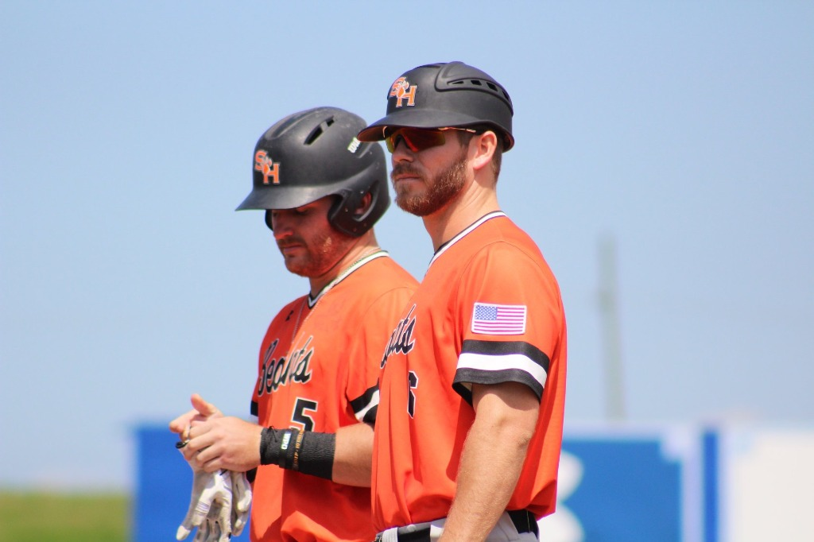
Skills alone do not survive the adversity of the diamond. These three convictions govern how we train, how we compete, and how we live.
Passion is what carries us through the day-to-day "boring" stuff. The early morning mobility, the dry swings in front of the mirror, the endless ground balls. When you genuinely love the purity of the craft, the routine never becomes a chore—it becomes your sanctuary.
Faith in God as the Creator and Architect of our career is what keeps us confident and consistently pursuing. We compete with intense freedom because we do not let results fuel us. Our worth is not tied to a batting average or an unearned run—our identity is secure, allowing us to swing with total liberation.
The LIFER mentality is the rhythm, the mindset, and the deliberate grooming of our nervous system that allows us to have the best chance of staying healthy and doing this for a long, long time. We reject short-term burnout in favor of sustainable biomechanical longevity and lifelong joy for the game.
Modern baseball training is often reduced to radar guns and mindless repetition. Our curriculum develops complete ballplayers through a harmony of reason, field intuition, and character. We train with intention so that when the lights come on, there is no thinking—only execution. The subconscious player is always the best player. Rote, automatic movement in the game is the goal. But it must be earned through deliberate, conscious training first. We reject mechanical repetition for its own sake—every rep must have a purpose—so that when the moment arrives, the body simply knows.
Objective understanding of human movement, bat path mechanics, and rotational power. No cookie-cutter drills—every adjustment is rooted in real biomechanical truth and individual leverage.
The intangible field awareness that cannot be measured on a spreadsheet. Reading pitch sequencing, anticipating bounces, manipulating counts, and out-thinking the pitcher.
Baseball is our vessel to mature the athlete, build their temple, and raise their spirit—all while learning how to commit to something far bigger than themselves: the team. We prepare players for a long, healthy career while teaching them to leave every room, team, and field better than they found it.
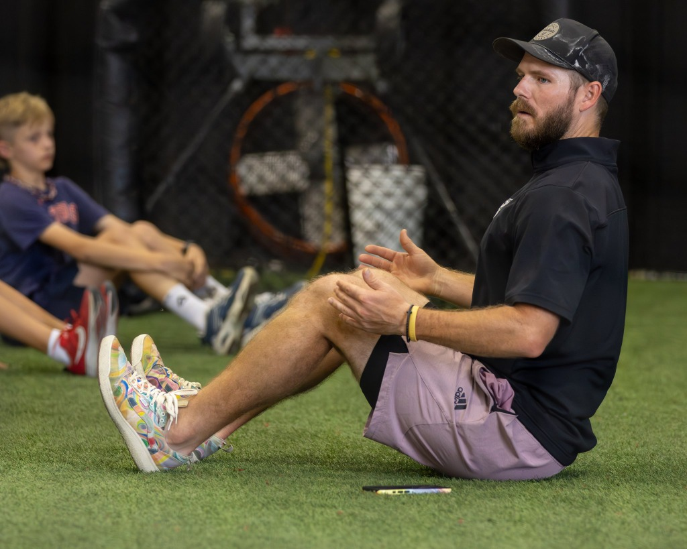
Mindful instruction & ground-level connection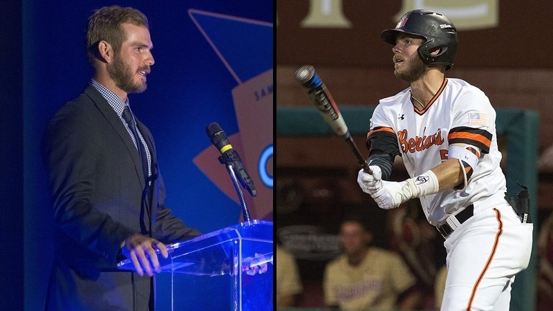
NCAA Division I Captain & Coach • Sam Houston State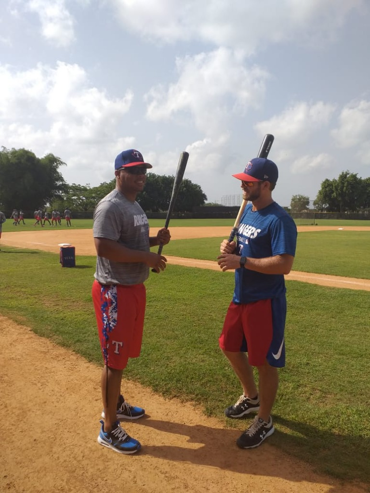
Dominican Republic • Texas Rangers AcademyI am a follower of Christ, a lifelong student of the diamond, and dedicated to stewarding the next generation of ballplayers toward their highest potential—on and off the field.
From quarterbacking and playing shortstop at The Woodlands High School to captaining Sam Houston State to historic NCAA Super Regionals, to managing professional prospects in the Dominican Republic with the Texas Rangers Organization—I’ve experienced baseball at every tier of competitive pressure.
Managed professional affiliate team in Dominican Republic • Arizona Hitting Coach (Fall League & Spring Training)
2 Conference Championships & 2017 Tallahassee Super Regional. Assistant Coach (Hitters/Infielders/Recruiting) & Director of Baseball Operations. Graduated Summa Cum Laude BBA (3.98 GPA).
Corvallis Super Regional finalist team (best record in school history, 1 game shy of Omaha).
All-State SS/QB (4.0 GPA) & 3x World Series Champion with the #1 nationally ranked Banditos.
A glimpse into the journey: from pro clubhouses and minor league bus rides to mentoring the next generation in the dugout.
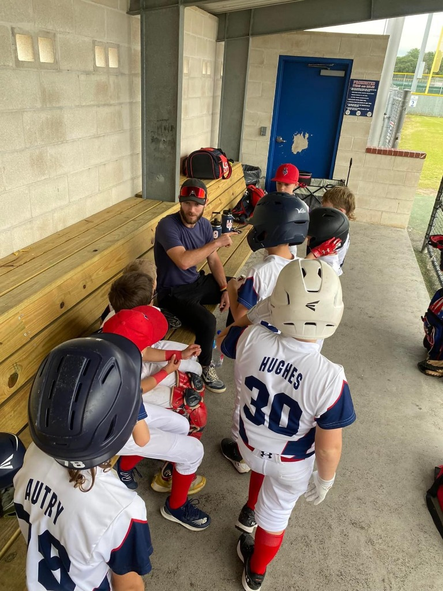
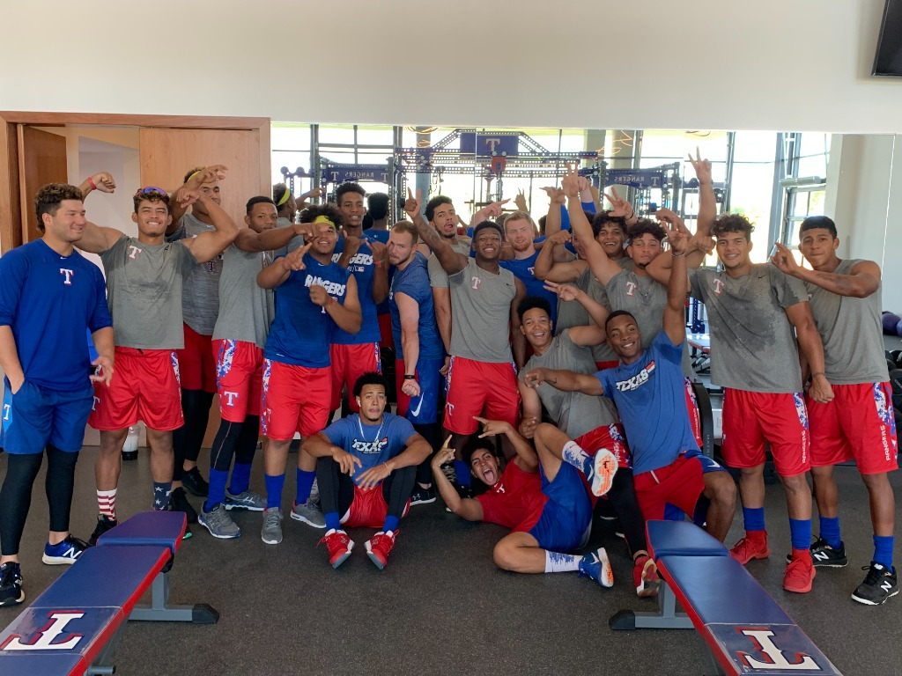
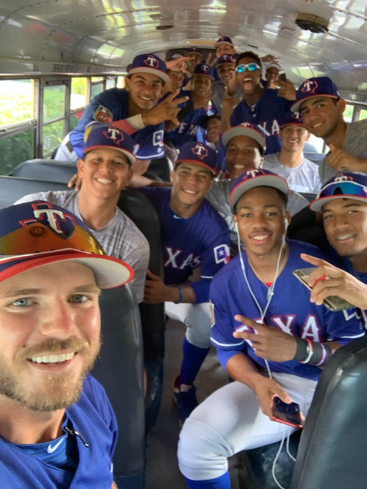
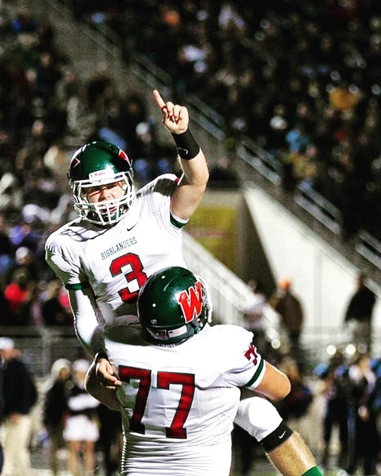
Every athlete moves differently. We develop individualized training plans to sharpen mechanics, build explosive rhythm, and foster in-game confidence.
As a former D1 & MiLB hitting coach, I use video analysis and modern analytical tools when necessary, but I've found most hitters struggle because they are over-complicating their process. I work to simplify and improve production by giving the hitter a clear, simple strategy—freeing them up and allowing the subconscious hitter to perform in games. Once all the core buckets are optimized, we transition to the tiny details that only a professional scout would see. We gotta make our cake before we worry about the icing. I also throw elite batting practice, giving hitters a real arm look with a mix of pitches and angles to develop their eyes and in-game timing mechanism. I implement tools, drills, homework, and daily actionable plans so hitters learn to put the work in and continue growing on their own.
Book on Calendar →Covering all positions on the diamond—middle & corner infield, outfield, and catching. I have experience training professional athletes across every spot on the field. While training for a younger player may look different, the end goal remains the same: I meet each player where they are, pour into them, and install the daily routines that build them into a true defensive rock over time. A good defender never rushes, but can play at a blistering pace when the moment demands it. The best defenders can go slow and master the monotonous actions their position demands every single day.
Book on Calendar →Baseball is a team sport and should be learned and trained in a group setting. While 1-on-1 sessions have their place, players must learn how to focus, compete, and communicate alongside their peers. My small group sessions optimize everything from fun and competition to curriculum and actionable feedback. Reduced per-player costs also allow me to provide high-level development options to more families. Classes have a higher capacity and lower rate—we want all athletes to have the opportunity to step inside our facility and absorb elite baseball wisdom. If classes are ever a financial hurdle, be sure to ask about the Chet Lemon Foundation camp we host each year, which is free to all kids.
Book on Calendar →Conducted via a dedicated series of Zoom calls to examine, recalibrate, and build better mindsets and training processes that alter the trajectory of an athlete’s career. We specialize in athletes who are dealing with physical pain during play, hitting a wall with stalled gains, battling burnout, or in need of a completely fresh approach because their diamond experience has brought more frustration than joy.
Book on Calendar →Knowledge • Technique • Feel. Open to all ages and experience levels, this interactive clinic gives players, coaches, and families an inside look at how high-level baserunning is taught. Led by former pro manager Lance Miles, the session mirrors what professional players experience in Spring Training. This is an active walk-through, conversational class rather than high-exertion conditioning—participants move base-to-base, listen, ask questions, and engage in high-level baseball IQ discussion. (Limit: up to 12 participants total, or 12 players plus up to 2 coaches).
Book on Calendar →Empowering the support system behind the athlete. I host free educational workshops for parents both in person at The Big House and remotely via Zoom, offering perspective on long-term development, communication, and navigating youth/travel ball. We also welcome entire coaching staffs and travel ball organizations into The Big House for live, in-person clinics covering practice design, defensive systems, hitting philosophy, and clubhouse culture.
Book on Calendar →“Training is not a 6-week program you can package in a box. It is a daily walk. I walk with athletes every day and teach them how to approach their craft. The VAFWCWS method is the daily neurological and physical wisdom that, repeated over time, builds an elite ballplayer.”
Mental theater before physical movement. Seeing pitch shapes, ball flights, and body balance before a single swing.
Awakening the nervous system, hips, and core. Preparing tendons and joints to handle explosive rotational torque.
Locked presence. Eliminating outside noise, anchoring the breath, and executing every single rep with clear intention.
Crafting precision in the mundane. Finding joy in the quiet repetitions where true mechanical separation is forged.
Big-moment edge. Trusting your preparation, playing loose with electric island confidence, and hunting the moment.
Daily journaling and self-auditing. Documenting feels, pitch patterns, mental friction, and staying accountable to the process.
Cellular recovery and neurological consolidation. The vital restoration where muscle memory and nervous systems regenerate.
Select your service, choose an available time slot, and reserve your cage or field time through our live booking schedule.
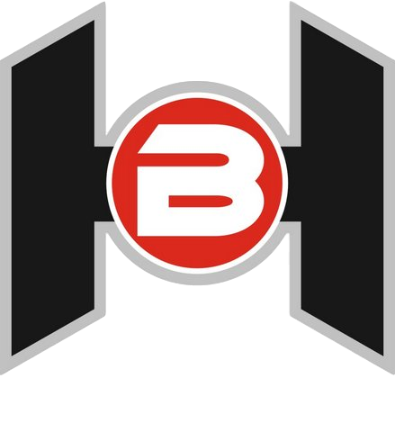
All local training is proudly hosted at The Big House, premier sports training hub featuring state-of-the-art batting tunnels, turf infield areas, and comprehensive athletic development equipment.
“Surround the athlete with the best tools, the best environment, and an unwavering standard of character.”
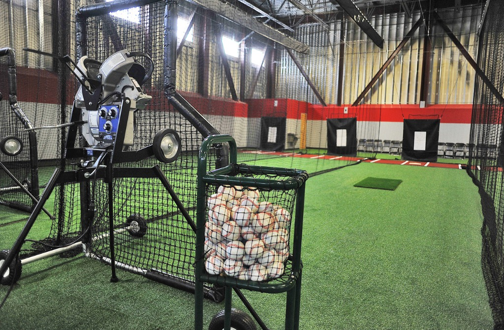
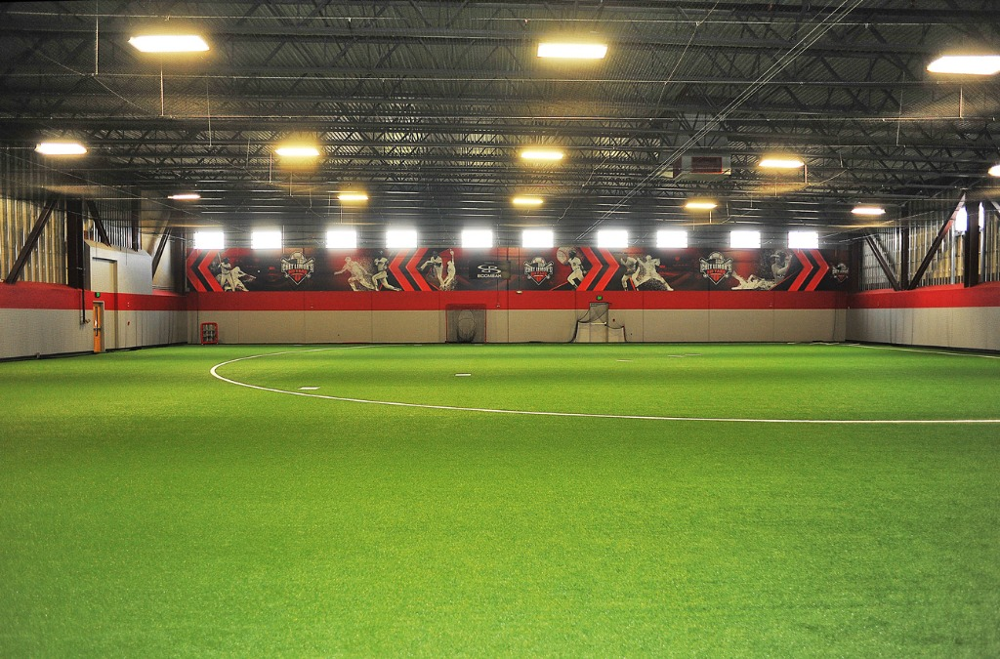